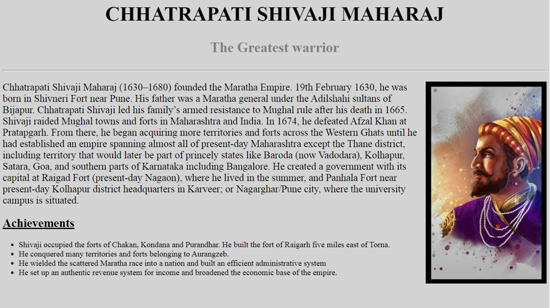

CREATE A TRIBUTE PAGE OF CHHATRAPATI SHIVAJI MAHARAJ
HTML Code
<html> <head> <title>Chhatrapati Shivaji Maharaj</title> </head> <body> <h1>CHHATRAPATI SHIVAJI MAHARAJ</h1> <h3>The Greatest warrior</h3> <hr style="height:2px;border-width:0;color:gray;background-color:gray"> <p><img src="s.jpg" width="300" height="500"/>Chhatrapati Shivaji Maharaj (1630-1680) founded the Maratha Empire. 19th February 1630, he was born in Shivneri Fort near Pune. His father was a Maratha general under the Adilshahi sultans of Bijapur. Chhatrapati Shivaji led his family’s armed resistance to Mughal rule after his death in 1665. Shivaji raided Mughal towns and forts in Maharashtra and India. In 1674, he defeated Afzal Khan at Pratapgarh. From there, he began acquiring more territories and forts across the Western Ghats until he had established an empire spanning almost all of present-day Maharashtra except the Thane district, including territory that would later be part of princely states like Baroda (now Vadodara), Kolhapur, Satara, Goa, and southern parts of Karnataka including Bangalore. He created a government with its capital at Raigad Fort (presentday Nagaon), where he lived in the summer, and Panhala Fort near present-day Kolhapur district headquarters in Karveer; or Nagarghar/Pune city, where the university campus is situated.</p> <h2><u>Achievements</u></h2> <ul> <li>Shivaji occupied the forts of Chakan,Kondana and Purandhar. He built the fort of Raigarh five miles east of Torna.</li> <li>He conquered many territories and forts belonging to Aurangzeb.</li> <li>He wielded the scattered Maratha race into a nation and built an efficient administrative system</li> <li>He set up an authentic revenue system for income and broadened the economic base of the empire.</li> </ul> </body> </html>
CSS Code
h1{ text-align:center; font-size: 50px; } h3{ text-align:center; color: grey; font-size: 35px; } img{ float: right; } body{ background-color: #D3D3D3; } p{ font-size: 25px; } li{ font-size: 20px; } h2{ font-size: 30px; }
IMAGE
